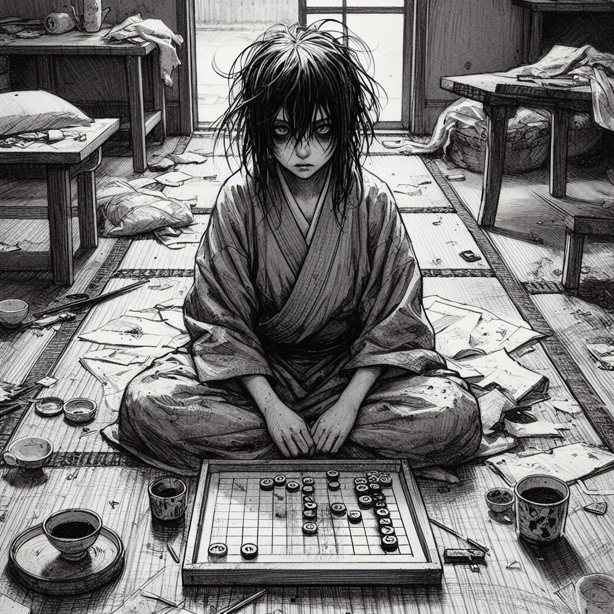
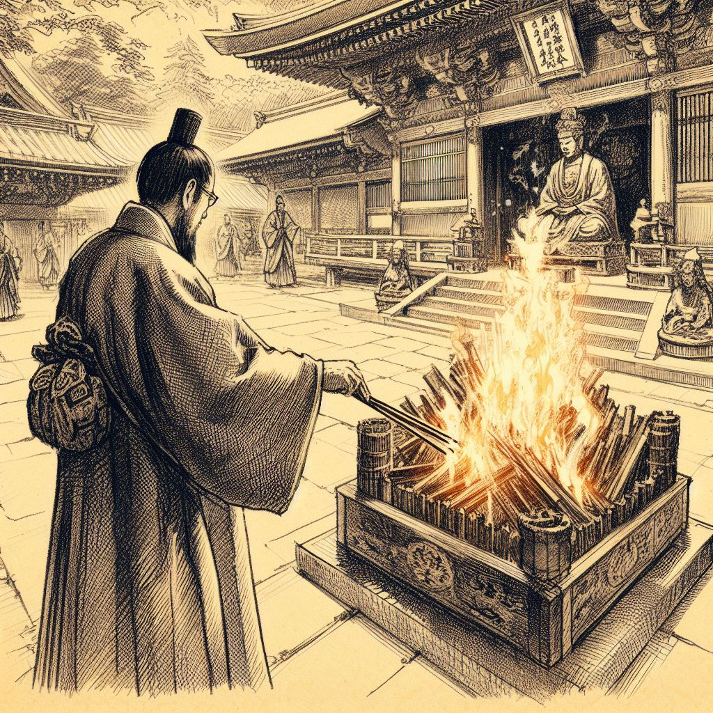
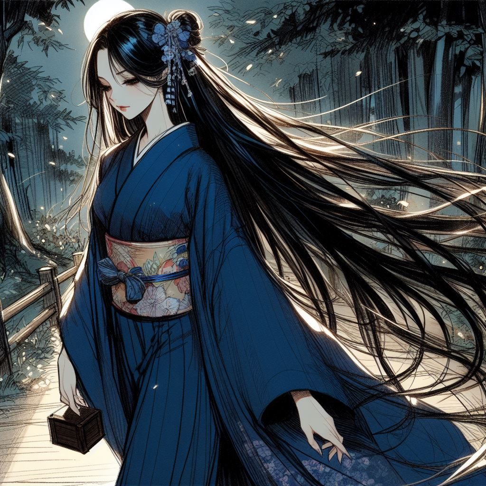
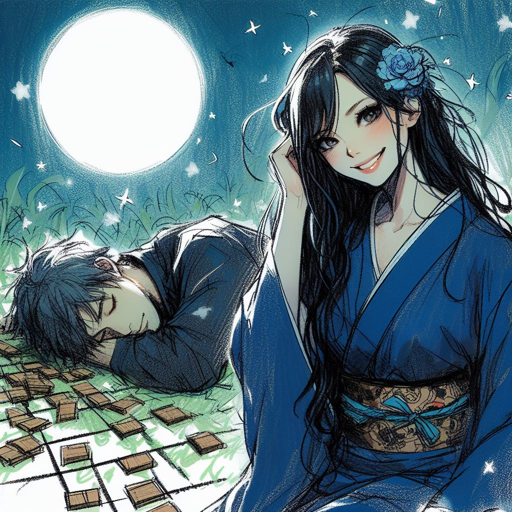

Dans le silence de la nuit, les rêves oubliés murmurent les échos de coeurs solitaires.
Introduction
Dans les contrées mystiques du Kansai, au Japon, une légende se murmure sous la lumière argentée de la pleine lune.
Komayō, une entité d'une beauté hypnotique, émerge des ombres, tissant un sortilège envoûtant sur ceux qui croisent son chemin.
Cette créature, plus envoûtante qu'une simple mortelle, utilise son aura surnaturelle pour séduire les âmes égarées.
Elle les attire dans un jeu de ōgi, une version complexe et envoûtante du jeu d'échecs japonais, où chaque mouvement est un pas de plus dans un ballet de stratégies et de ruses.
Komayō, avec une grâce sibylline, guide ses adversaires à travers ce labyrinthe de décisions et de manœuvres.
Mais au fur et à mesure que la partie avance, une fatigue sournoise s'infiltre dans l'esprit des joueurs.
Leur jugement se trouble, leur force s'évapore, les plongeant peu à peu dans un sommeil profond et irréversible.
Dans cet état de vulnérabilité, Komayō révèle sa véritable nature.
Elle extrait leur essence vitale, laissant derrière elle une coquille vide de l'énergie autrefois vibrante de ses victimes.
Leur âme, transformée en yūrei, est condamnée à errer sans repos.
Tourmentées par le souvenir captivant de Komayō et le désir inassouvi de finir leur partie de ōgi, ces âmes perdues errent dans un monde entre deux, prisonnières d'une quête inachevée et d'un rêve désormais inaccessible.
La Solitude de Yuki
Dans les rues sinueuses et animées de Kyōto, sous le règne du shōgun, se dressait une demeure majestueuse, témoignage silencieux d'un statut noble et d'une richesse abondante.
Cette demeure, baignée dans les teintes douces de la tradition et la splendeur de l'ère Edo, était le foyer de Yuki, l'épouse d'un noble de haute estime au service du shōgun.
Yuki, d'une beauté délicate, possédait un charme qui transcendaient les somptueuses parures et les kimonos finement brodés qu'elle portait.
Ses yeux, d'un noir profond, reflétaient souvent un sentiment lointain, un mélange de rêverie et de mélancolie.
Son mari, un homme de devoir et de passion pour son travail, était fréquemment absent, emporté par les exigences de son rôle auprès du shōgun.
La grande demeure, avec ses couloirs silencieux et ses pièces ornées, résonnait du murmure constant des serviteurs et des courtisans.
Pourtant, en dépit de cette agitation, une tranquillité étrange y régnait, une tranquillité qui pesait sur le cœur de Yuki.
Elle se promenait souvent dans les jardins minutieusement entretenus, où les fleurs de cerisier jouaient avec le vent, une danse solitaire qui semblait faire écho à sa propre solitude.
Les journées de Yuki étaient rythmées par les rituels de la cour, les visites occasionnelles de dames de la noblesse, et les leçons de koto dont les mélodies mélancoliques semblaient s'accorder à son état d'esprit.
Elle trouvait un certain réconfort dans ces activités, mais elles ne suffisaient pas à combler le vide laissé par l'absence de son mari.
Dans les moments de solitude, Yuki se perdait dans ses pensées, rêvant de voyages lointains, d'aventures inconnues, et d'une vie remplie de passion et d'émotion.
Elle rêvait de partager ces moments avec son mari, mais ces rêves étaient vite dissipés par la réalité de son quotidien, un quotidien fait de routines et de silence.
La beauté et la richesse de Yuki suscitaient l'envie parmi les courtisans, mais elle ne trouvait de véritable réconfort dans aucune de ces relations superficielles.
Elle aspirait à une connexion plus profonde, à une compréhension mutuelle qui semblait hors de portée dans son monde de conventions et d'apparences.
C'est dans ce contexte de mélancolie et d'isolement que le destin de Yuki prit un tournant inattendu, marqué par l'arrivée d'un cadeau mystérieux de son mari : un ancien jeu de ōgi, une variante du shōgi, qui allait bientôt éveiller en elle un intérêt obsessionnel et révéler des secrets cachés dans les profondeurs de son âme.
L'Arrivée du Jeu de Ōgi
Un matin, alors que le soleil levant teintait le ciel de Kyōto de nuances rosées, un colis inattendu arriva à la demeure de Yuki.
C'était un cadeau de son mari, une rareté qui piqua immédiatement son intérêt.
Avec des mains délicates, elle défit les liens soyeux qui entouraient le paquet, révélant un jeu de ōgi, une variante ancienne et moins connue du shōgi.
Le jeu était magnifiquement ouvragé, ses pièces finement sculptées dans un bois ancien, dont les veines racontaient des histoires d'artisans d'un autre temps.
Chaque pièce était un petit chef-d'œuvre, minutieusement ciselé, avec des caractères kanji gravés d'une main experte.
Le plateau, un ōgiban, était lui aussi un objet d'art, avec ses lignes épurées et sa surface lisse, invitante sous les doigts de Yuki.
Accompagnant le jeu, une lettre de son mari détaillait la provenance de ce trésor.
Il l'avait trouvé chez un marchand d'antiquités renommé, un homme qui connaissait les histoires et les légendes derrière chaque objet qu'il vendait.
Dans sa missive, il exprimait son désir de partager des moments de jeu avec Yuki à son retour, une pensée qui éveilla en elle un sentiment de chaleur et d'anticipation.
Curieuse de ce jeu qui semblait sorti tout droit d'une époque révolue, Yuki convoqua l'une de ses servantes, une jeune femme instruite dans les arts et les lettres.
Ensemble, elles se penchèrent sur les règles du jeu, explorant les stratégies et les mouvements, dans un dialogue où se mêlaient excitation et concentration.
Les après-midi suivants furent consacrés à l'apprentissage et à la pratique du jeu.
Yuki découvrit une passion inattendue pour l'ōgi, trouvant dans ses règles complexes et ses stratégies un défi intellectuel stimulant.
Elle s'imaginait déjà jouer contre son mari, envisageant avec plaisir les parties qui les attendaient.
Le jeu apportait une nouveauté bienvenue dans ses journées, rompant la monotonie de sa solitude.
Cependant, ce qui commença comme un simple passe-temps innocent, destiné à combler les heures vides, se transforma peu à peu en une fascination dévorante.
Yuki se retrouvait souvent à jouer seule, plongée dans des parties imaginaires, où elle affrontait des adversaires invisibles dans des duels de l'esprit.
Ses nuits, auparavant tranquilles, furent bientôt envahies par des rêves étranges et récurrents, où le jeu de ōgi devenait le centre d'un univers mystérieux et envoûtant.
Ces rêves, peuplés de figures obscures et de paysages lunaires, entraînaient Yuki dans un monde où la réalité et la fantaisie semblaient se confondre, marquant le début d'une aventure qui allait bouleverser son existence.
Obsession et Rêves Énigmatiques
Au fil des jours, la fascination de Yuki pour le jeu de Ōgi se transforma en une véritable obsession.
Chaque moment de libre était consacré à la découverte de nouvelles stratégies, à la contemplation des pièces minutieusement sculptées, et à la répétition des mouvements sur le plateau.
Le jeu, autrefois une source de divertissement innocent, commença à occuper une place prépondérante dans ses pensées.
Cette obsession s'immisça peu à peu dans les rêves de Yuki.
Chaque nuit, elle se retrouvait transportée dans un monde onirique où le jeu prenait vie de manière étrangement vivante.
Elle se voyait assise dans une clairière baignée par la lumière argentée de la lune, face à une silhouette mystérieuse et envoûtante.
La figure, dont le visage était dissimulé derrière un masque de renard, portait un kimono bleu nuit orné de motifs subtils qui semblaient danser sous les rayons lunaires.
Cette présence, à la fois rassurante et insaisissable, se concentrait sur un jeu de Ōgi, ses doigts effleurant les pièces avec une grâce et une précision presque surnaturelles.
Yuki, attirée irrésistiblement par cette entité énigmatique, s'asseyait en face d'elle, prête à se mesurer dans un duel silencieux.
Il n'y avait aucun mot échangé entre elles, seulement le murmure du vent à travers les feuilles et le doux cliquetis des pièces de jeu.
Chaque partie semblait un ballet captivant, une danse de l'esprit et de la stratégie.
Nuit après nuit, Yuki ressentait une connexion profonde avec cette femme masquée, une connexion qui semblait transcender les barrières du temps et de l'espace.
L'inconnue devenait un guide dans ce monde de rêve, menant Yuki à travers les intrications du jeu, l'initiant à des stratégies inconnues et à des mouvements imprévus.
Ces rêves, d'une intensité croissante, laissaient Yuki éveillée et agitée, son esprit incapable de se détacher de l'échiquier onirique.
À son réveil, elle découvrait que les pièces du jeu réel s'étaient déplacées, adoptant les positions de sa dernière partie rêvée.
Cette étrange coïncidence exacerbait son obsession, brouillant davantage la ligne entre rêve et réalité.
La frontière entre son monde et celui du jeu de Ōgi devenait de plus en plus floue.
Yuki se retrouvait prisonnière d'une énigme dont elle ne maîtrisait ni les règles ni les conséquences.
Elle devenait de plus en plus absorbée par le jeu, le laissant envahir ses pensées, ses rêves, et bientôt, son existence même.
La Détérioration de Yuki
Les semaines passèrent, et avec elles, la condition de Yuki continua de se dégrader.
Le noble mari de Yuki, après un long séjour au service du shōgun, retourna enfin à la maison.
Rien n'aurait pu le préparer à la scène qui l'attendait.
La demeure, autrefois un symbole d'ordre et d'élégance, était méconnaissable.
Les signes de négligence étaient partout : des tasses de thé vides et des éventails éparpillés jonchaient les tables, tandis que des vêtements délicats étaient laissés à l'abandon.
La maison, autrefois pleine de vie et de rires, portait maintenant les stigmates d'un profond désordre.
Mais rien n'était plus frappant que l'état de Yuki elle-même.
Assise en tailleur sur un tatami dans la salle de jeu, elle semblait avoir perdu tout contact avec le monde extérieur.
Ses yeux, autrefois vifs et expressifs, étaient maintenant cernés, éteints, fixant le plateau de Ōgi devant elle.
Ses cheveux, naguère coiffés avec soin, étaient emmêlés et en désordre, et sa tenue, autrefois impeccable, était négligée.
Une lueur d'angoisse et de confusion brillait dans son regard, témoignant des nuits blanches et des tourments intérieurs.

Le mari, saisi par une profonde inquiétude, s'agenouilla à côté d'elle, posant une main réconfortante sur son épaule.
Yuki sursauta légèrement, comme si elle était brusquement ramenée à une réalité lointaine.
Yuki, que s'est-il passé ? demanda-t-il, sa voix teintée d'une profonde préoccupation.
En levant les yeux vers lui, Yuki tenta de former des mots, mais sa voix était faible, hésitante, trahissant la fatigue et le désarroi qui l'avaient consumée.
Ses phrases étaient décousues, reflétant un esprit troublé et épuisé.
Le mari réalisa alors avec horreur l'étendue de la situation.
La femme dynamique et joyeuse qu'il avait quittée était devenue l'ombre d'elle-même, emprisonnée dans un monde intérieur obscur, hantée par un rêve qui lui dérobait peu à peu son énergie et sa lucidité.
Déterminé à trouver une solution, il entreprit de chercher de l'aide.
Il pensa à un moine exorciste renommé pour sa sagesse et sa connaissance des maux de l'âme.
Peut-être, espérait-il, cet homme sage pourrait-il libérer Yuki de l'emprise de cette étrange malédiction qui semblait liée au jeu de Ōgi.
Le mari, porté par un mélange de détermination et d'espoir, fit rapidement les préparatifs pour la venue de ce moine, espérant ardemment que celui-ci pourrait apporter la lumière dans l'obscurité qui avait enveloppé Yuki.
La Quête de Guérison
Le mari de Yuki, porté par un mélange d'inquiétude et d'espoir, fit rapidement appel à un moine exorciste réputé pour sa sagesse et sa connaissance des maux de l'âme.
Lorsque le moine arriva à la demeure, un silence respectueux s'empara de tous les serviteurs, témoignant de la gravité de la situation.
Le moine, un homme d'âge mûr aux traits marqués par une vie de contemplation et de dévotion, franchit le seuil de la maison avec une présence tranquille mais imposante.
Peu après son entrée, il fut saisi d'un malaise soudain, comme frappé par une force invisible.
Il s'allongea un instant dans un fauteuil du salon, son visage se crispant sous l'effet d'une tension intérieure.
Les sourcils du moine se froncèrent, son pouls s'accéléra, et il ferma les yeux, concentrant toute son énergie pour percevoir la nature de l'énergie qui imprégnait la maison.
Lorsqu'il les rouvrit, il se tourna vers le couple avec une gravité alarmante.
Il y a une présence ici, déclara-t-il d'une voix grave.
Un esprit démoniaque se cache dans ces lieux.
Le mari, anxieux, demanda d'où venait cet esprit et pourquoi il s'en prenait à Yuki.
Le moine, les yeux à nouveau clos, prit une profonde inspiration et murmura des sons d'un ton grave, comme s'il communiquait avec des forces invisibles.
Cet esprit est dépourvu de compassion et d'empathie. Il manipule l'art du jeu et les joueurs pour atteindre ses objectifs sombres. Il échappe à notre compréhension et défie les attentes, expliqua-t-il.
Le mari se sentait désemparé face à ces révélations.
Que pouvons-nous faire pour l'éloigner ? implora-t-il.
Après un moment de réflexion, le moine rouvrit les yeux et se leva.
Le plateau de jeu que votre femme tient, il est l'ancrage de cet esprit dans notre monde. Il doit être brûlé au temple, et cela sans tarder, ordonna-t-il avec une urgence palpable.
Le moine quitta rapidement la maison, laissant le mari avec un poids de responsabilité.
Ce dernier prit sa femme dans ses bras, lui expliquant doucement la nécessité de se séparer du jeu pour son bien-être.
Il retira délicatement l'ōgiban des mains tremblantes de Yuki et se prépara pour le voyage nocturne au temple, un lieu sacré où il espérait trouver la purification et la paix pour son épouse tourmentée.
La nuit était tombée sur Kyōto, enveloppant les rues d'un voile de mystère.
Le mari, tenant fermement le plateau de jeu, se dirigea vers le temple, déterminé à mettre fin à la malédiction qui avait plongé sa bien-aimée dans un abîme de désespoir.
Le Rituel de Purification au Temple
Le mari de Yuki marchait d'un pas rapide vers le temple, tenant fermement l'ōgiban sous son bras.
Il sentait une angoisse grandissante l'envahir, comme si quelque chose le poursuivait dans l'obscurité.
Il se retournait plusieurs fois, mais ne voyait rien d'autre que les arbres et la rivière qui scintillent sous la lune.
Son esprit était tourmenté par des pensées de sa femme, plongée dans une obsession sombre à cause de ce jeu ancien.
Il espérait que la purification du plateau de jeu au temple apporterait une fin à la malédiction qui s'était abattue sur elle.
Arrivé au temple, un sanctuaire de sérénité au milieu de la ville endormie, il fut accueilli par un prêtre.
Le visage du prêtre, éclairé par la lumière tremblante des lanternes, reflétait une compassion profonde.
Après avoir brièvement expliqué la situation, le mari remit l'ōgiban entre les mains du prêtre.
Nous allons purifier cela avec le feu sacré, déclara le prêtre d'une voix douce mais ferme, guidant le mari vers un grand bûcher où des offrandes et des prières étaient déjà en train de se consumer.
Les flammes dansaient vers le ciel nocturne, comme si elles liaient le monde terrestre à celui des esprits.

Avec une révérence respectueuse, le prêtre plaça l'ōgiban sur le bûcher.
Le mari observa les flammes engloutir le plateau de jeu, sa lumière se mêlant à la fumée qui s'élevait vers les étoiles.
Il ressentait un mélange de soulagement et d'appréhension – le soulagement de se débarrasser de la source de la malédiction, et l'appréhension de l'inconnu qui attendait Yuki et lui après ce rituel.
Alors que le dernier morceau de l'ōgiban se consumait, le prêtre murmura des prières anciennes, ses mots se perdant dans le crépitement du feu.
Le mari se joignit au prêtre dans ces prières, espérant ardemment que cet acte libérerait Yuki de l'emprise du jeu.
Après la cérémonie, le mari remercia le prêtre et quitta le temple, son cœur plus léger mais son esprit encore préoccupé par l'état de Yuki.
Le chemin du retour semblait plus tranquille, comme si la nuit elle-même partageait son espoir renouvelé.
C'est alors, perdu dans ses pensées et ses espoirs pour l'avenir, qu'il rencontra une figure familière sur le chemin du retour, une rencontre qui allait révéler des vérités encore plus profondes sur la malédiction qui avait frappé sa maison.
Rencontre Inattendue et Révélations
La nuit enveloppait doucement Kyōto, laissant la ville baignée dans un calme serein, lorsque le mari de Yuki, le cœur allégé par le rituel de purification, fit une rencontre inattendue.
Sa marche solitaire fut interrompue par la voix essoufflée de sa servante, qui semblait surgir de l'ombre.

Maître ! Attendez, s'il vous plaît ! s'exclama-t-elle, son kimono bleu nuit flottant autour d'elle comme une brume nocturne.
Sa chevelure, normalement nouée avec soin, tombait librement sur ses épaules, conférant à sa silhouette une allure presque mystique.
Le mari s'arrêta, la regardant avec surprise et suspicion.
Que se passe-t-il ? demanda-t-il.
La servante, reprenant son souffle, lui tendit une boîte en bois.
Vous avez oublié ceci, dit-elle, une tension évidente dans sa voix.
Les pièces du jeu de Ōgi. Vous alliez les brûler, n'est-ce pas ?
Prenant la boîte avec un regard méfiant, il acquiesça.
Oui, c'est vrai. Merci de me l'avoir rappelée.
Il était perplexe face à cette attention inhabituelle de la part de sa servante, mais il n'avait pas le temps de s'attarder sur ces pensées.
Cependant, la servante ne semblait pas pressée de partir.
Maître, commença-t-elle, hésitante, il y a quelque chose que vous devez savoir. J'ai observé votre femme jouer à ce jeu, nuit après nuit. Elle était... différente, comme si elle était ailleurs.
Le mari, intrigué par ses paroles, l'encouragea à continuer.
Elle jouait seule, suivant toujours le même enchaînement de coups, et la partie se terminait toujours de la même façon, sur une position précise, expliqua la servante, sa voix empreinte d'une inquiétude palpable.
Ces révélations laissaient le mari profondément troublé.
Il réalisait maintenant qu'il y avait plus à comprendre sur la situation de Yuki que la simple destruction de l'ōgiban.
La répétition des mouvements, la position finale toujours identique - ces détails suggéraient une énigme plus complexe qu'il ne l'avait imaginé.
Merci, dit-il doucement à la servante.
Vos observations pourraient être la clé pour aider Yuki.
Il savait que le chemin vers la guérison de sa femme ne faisait que commencer.
La nuit autour d'eux semblait plus dense, et le mystère du jeu de Ōgi plus profond que jamais.
La Dernière Partie
Sous le voile lumineux de la lune, le mari et la servante trouvèrent un endroit tranquille le long de la rive de la rivière, un lieu paisible et éloigné des ruelles animées de Kyōto.
Là, à l'écart du monde, ils s'apprêtaient à plonger dans les mystères du jeu de Ōgi qui avait tant consumé Yuki.
La servante ouvrit la boîte en bois avec précaution, révélant les pièces du jeu soigneusement rangées à l'intérieur.
Chacune d'entre elles semblait porter en elle une part de l'énigme qui entourait la malédiction de Yuki.
Le mari observait, un mélange de fascination et d'appréhension dans son regard.
Chaque nuit, j'ai regardé Madame Yuki jouer, commença la servante, sa voix basse se mêlant au murmure de la rivière.
Elle était absorbée, comme si chaque mouvement était dicté par une force invisible.
Délicatement, elle commença à disposer les pièces sur un plateau improvisé qu'elle avait tracé dans le sol.
Avec chaque pièce qu'elle plaçait, la servante décrivait le mouvement correspondant, ses explications révélant une compréhension profonde du jeu.
Madame Yuki commençait toujours ici, puis déplaçait cette pièce là, disait-elle en montrant les déplacements sur le plateau.
Le mari, absorbé, suivait chaque geste, chaque stratégie décrite, tentant de comprendre ce qui dans ce jeu avait pu capturer l'esprit de Yuki.
Alors que la séquence progressait, un motif commençait à émerger, une série de mouvements qui se répétaient invariablement, comme si Yuki était piégée dans un cycle sans fin.
Et voici la position finale, annonça la servante, désignant l'arrangement des pièces.
C'est toujours ainsi que les parties se terminaient.
Sa voix, lointaine et mélodieuse, semblait flotter dans l'air, portée par le vent nocturne.
Le maître de maison sentit une lassitude insidieuse l'envahir, ses paupières devenant lourdes, son esprit s'embrouillant.
Il ferma les yeux, s'abandonnant un instant à cette fatigue soudaine.

Le dernier souvenir qu'il eut avant de sombrer dans l'inconscience fut le visage flou de la servante et sa voix s'éloignant dans la nuit, mêlée aux gouttes de pluie qui commençaient à tomber doucement.
Les gouttes s'écrasaient sur le sol, accompagnant la mélodie lointaine de la servante qui chantonnait une comptine.
Avec une tranquillité étonnante, elle remit soigneusement les pièces dans la boîte.
Elle jeta un dernier regard au corps inanimé du maître, son expression insondable, avant de s'éloigner dans les ombres de la nuit, laissant derrière elle le mystère non résolu du ōgiban.
La pluie tombait désormais plus fort, lavant les rues de Kyōto de leurs secrets, tandis que Komayō disparaissait, sa silhouette se fondant dans le paysage nocturne, emportant avec elle les échos d'une malédiction ancienne.